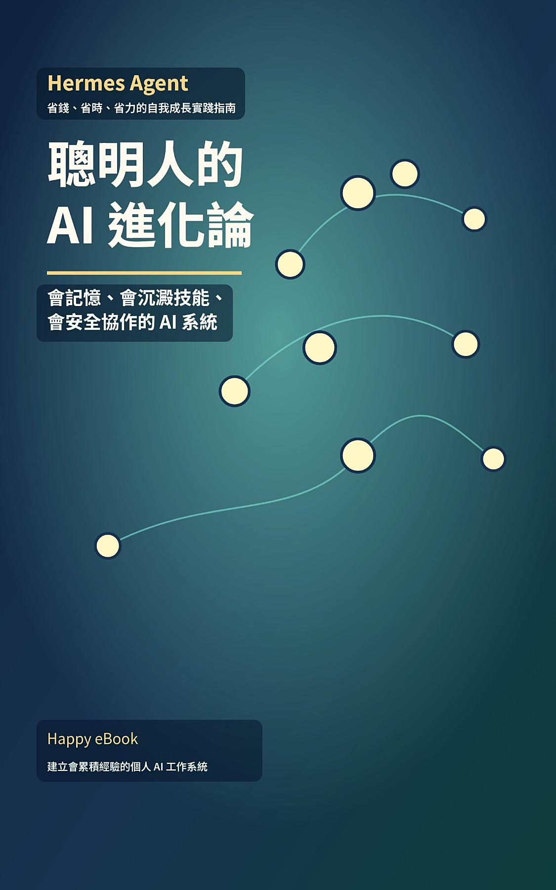

Google Play Books
聰明人的 AI 進化論
Hermes Agent 省錢、省時、省力的自我成長實踐指南

付費購買提供試閱版
聰明人的 AI 進化論
Hermes Agent 省錢、省時、省力的自我成長實踐指南
《聰明人的 AI 進化論》是一本寫給知識工作者、創作者、工程師與小團隊的 Hermes Agent 實作指南。AI 已經很會回答問題，但多數人的 AI 仍然不會真正累積經驗。你今天教它一次偏好，明天可能還要再教一次；你今天讓它修好一個工作流，下次遇到類似任務，它未必知道可以沿用之前的方法。本書要解決的，就是這種「聰明但不會長大」的 AI 使用困境。本書以 Hermes Agent 為核心，帶你建立一套會記憶、會沉澱技能、會整理流程、會在安全邊界內協助行動的個人 AI 工作系統。內容涵蓋 Agentic AI 基本觀念、低成本部署、OpenClaw 遷移、SOUL.md 人格設定、三層記憶架構、SKILL.md 技能生成、Curator 技能治理、GEPA 提示詞優化、Telegram / Discord / Slack 跨平台入口、職業 Profile、安全防禦與多 Agent 協作。這不是一本只提供提示詞範例的書，而是一本協助你把 AI 從「一次性問答工具」升級成「可訓練、可維護、可累積經驗的數位工作夥伴」的實作指南。